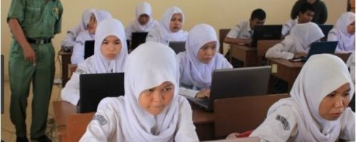

Selamat Datang
Selamat Datang
"Ayo, Berikan Aspirasi Positif Anda Terhadap SMA Negeri 3 Takalar"
- About -
Bersama Menciptakan Perubahan Kualitas Pendidikan
Pendidikan adalah hal yang penting untuk kemajuan suatu bangsa, untuk menjadi bangsa yang maju tentu merupakan cita-cita setiap negara di dunia. Pendidikan merupakan proses melahirkan generasi penerus yang berkualitas. Indonesia adalah salah satu negara berkembang yang masih mempunyai masalah dalam dunia pendidikan. Penyebab rendahnya mutu pendidikan di Indonesia antara lain adalah masalah efektivitas, efisiensi, dan standarisasi pengajaran, selain kurang kreatifnya para pendidik dalam membimbing siswa, kurikulum yang membuat pendidikan semakin mundur. Kurikulum hanya didasarkan pada pengetahuan pemerintah tanpa memperhatikan kebutuhan masyarakat.
Harus diakui bahwa peserta didik kita mayoritas sama sekali tidak memiliki cita-cita untuk menjadi apa kelak, meskipun ada yang punya tetapi tidak jelas. Yang terjadi adalah mereka belajar secara ngambang dan tidak memiliki arah yang jelas yang penting berangkat sekolah. Satu hal yang penting adalah para pendidik kita tidak mengarahkan anak untuk mewujudkan cita-citanya namun bagaimana anak supaya bisa menghapal semua materi pelajaran tanpa terkecuali.
Seiring berjalannya waktu, Pada bulan Maret, dunia digemparkan dengan salah satu penyakit yang pengaruhnya sangat merugikan beberapa pihak, WHO memberikan informasi bahwa penyakit yang meresahkan dunia adalah virus corona. Munculnya suatu penyakit yaitu virus corona, membuat sistem negara berubah, tak terkecuali Indonesia. Berbicara mengenai pendidikan, sistem pendidikan di Indonesia berubah drastis dan memiliki banyak kekurangan disebabkan kondisi yang tidak kondusif. Salah satu sistem yang diterapkan oleh kementerian pendidikan dan kebudayaan Indonesia (Kemendikbud) yaitu menerapkan sistem pembelajaran jarak jauh (PJJ)/kegiatan belajar dari rumah (KBDR). Selama penerapan sistem tersebut, telah tersedia beberapa aplikasi yang siap digunakan untuk pembelajaran jarak jauh seperti Zoom, Google Meet, Classroom, maupun via WhatsApp tetapi tak lepas dari kekurangan yaitu membebankan para peserta didik dari segi faktor kuota internet karena pengeluaran keluarga cukup banyak dan juga kurangnya aktivitas interaksi antara pendidik dan peserta didik. Kuota internet menjadi masalah yang paling sering dikeluhkan oleh orang tua siswa(i) yang ekonominya terdampak pandemi virus corona. Selain itu, masalah lain adalah sebanyak 79,9 siswa mengeluhkan minimnya interaksi dengan guru dalam pembelajaran daring. Di sisi lain terdapat juga masalah yang terjadi pada siswi selama sistem pembelajaran jarak jauh yaitu kasus bunuh diri siswi SMA di Kabupaten Gowa, Sulawesi Selatan yang diduga depresi karena banyaknya tugas sekolah daring.
Permasalahan tersebut terkait dengan komunikasi dalam sistem pendidikan. Seorang guru maupun siswa harus mampu menjalin komunikasi dengan baik. Jika seperti ini, kualitas pendidikan di Indonesia sangat memprihatinkan. Maka dari itu, dibutuhkan tenaga pendidik yang berkualitas begitu pun peserta didik dalam memajukan kualitas pendidikan Indonesia. Dari permasalahan-permasalahan yang sering terjadi dalam penerapan sistem pembelajaran jarak jauh akan memberikan pengaruh negatif terhadap pendidikan Indonesia. Wajar saja jika dalam sistem pendidikan saat ini terjadi banyak masalah karena faktor situasi yang mengharuskan kita menerapkan sistem tersebut tetapi tidak menutup kemungkinan kita harus memberikan gobrakan-gobrakan terbaru setelah mengetahui masalah yang sering dihadapi oleh para peserta didik maupun pendidik selama pembelajaran jarak jauh.
Mengapa komunikasi dalam pendidikan itu penting? Sebagai makhluk sosial, manusia tak bisa lepas dari komunikasi. Entah komunikasi verbal maupun komunikasi non verbal. Dalam segala bidang, tak terkecuali pendidikan, komunikasi menjadi salah satu hal yang sangat penting. Dalam proses pembelajaran, komunikasi digunakan untuk menyampaikan pesan, baik itu berupa ilmu pengetahuan maupun teknologi. Berhasil tidaknya informasi yang disampaikan kepada para peserta didik sangat ditentukan oleh keefektifan komunikasi. Untuk menciptakan proses komunikasi yang efektif, pendidik harus memahami seluk beluk komunikasi pendidikan, antara lain mengenai metode yang tepat dalam komunikasi pendidikan, strategi untuk meningkatkan efektivitas komunikasi dalam pendidikan, serta yang tak kalah pentingnya adalah mengenai hambatan yang seringkali muncul dalam komunikasi pendidikan. Melihat situasi yang tidak kondusif sehingga sistem pendidikan ini memberikan pengaruh negatif yaitu minimnya komunikasi peserta didik dan pendidik.
Mengubah sistem pendidikan dengan cara mengarahkan mereka untuk lebih kreatif dalam melakukan kegiatan .dan pemerintah harus lebih cepat menangani masalah pendidikan terutama dalam membuat kurikulum yang sesuai dengan kondisi para siswa, dengan menciptakan kurikulum yang lebih mengarah ke potensi mereka. Di sisi lain, bahwa pelajar/mahasiswa juga memiliki kesempatan untuk memberikan tanggapan/aspirasi kepada kemendikbud mengenai sistem pendidikan di Indonesia. Ada banyak pelajar/mahasiswa yang pemikirannya kritis terhadap upaya-upaya perubahan pendidikan Indonesia tetapi tidak adanya perantara komunikasi antara pelajar/mahasiswa dan juga kemendikbud. Pada suatu acara televisi, menteri pendidikan sangat senang ketika mendengar aspirasi pelajar/mahasiswa terkait pendidikan Indonesia saat ini tetapi aspirasi tersebut baru bisa tersampaikan jika berada dalam suatu kegiatan yang bersifat tatap muka/offline bersama menteri pendidikan. Maka dari itu, saya berinisiatif untuk membuat suatu website atau aplikasi yang bertujuan sebagai perantara komunikasi antara pelajar dan juga menteri pendidikan. Terlebih lagi kita berada dalam sistem pendidikan pembelajaran jarak jauh yang menjadi perspektif masyarakat sering terjadinya pro dan kontra dari setiap keputusan kemendikbud mengenai pendidikan, jadi alangkah baiknya jika pelajar/mahasiswa juga terlibat dalam kemajuan pendidikan Indonesia. Dengan meningkatnya kualitas pendidikan berarti sember daya manusia akan semakin baik dan akan mampu meneruskan cita-cita bangsa dalam dunia internasional.
Pendidikan adalah senjata paling ampuh untuk mengubah dunia.
Pendidikan yang berkarakter akan menciptakan banyak intelektual terpelajar bukan intelektual kurang ajar.
Tidak ada suatu negara maju tanpa pendidikan yang keras.
Apa gunanya sekolah tinggi - tinggi, jika hanya perkaya diri sendiri?
 Mengenal Sistem Pendidikan Luar Negeri
Mengenal Sistem Pendidikan Luar Negeri